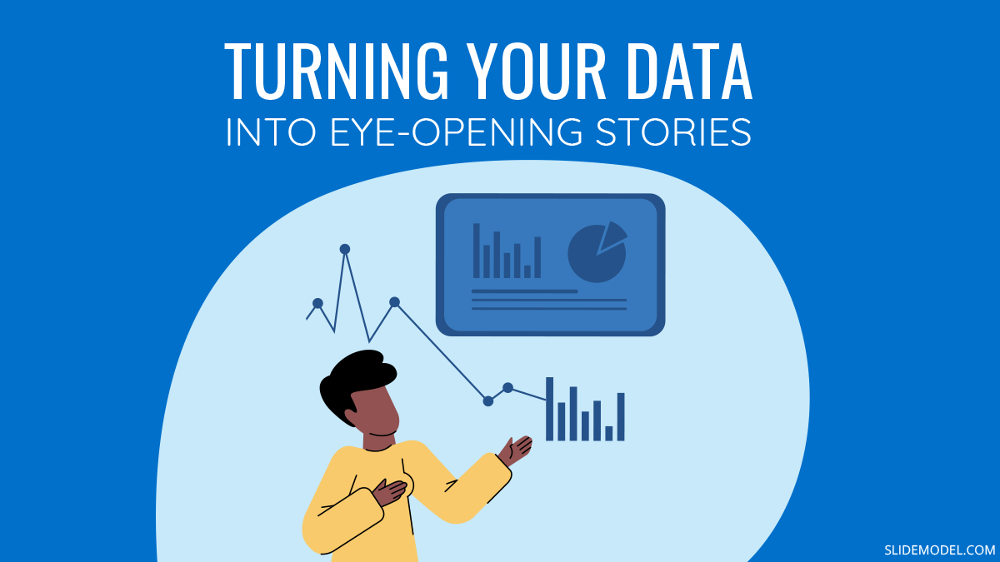

Skills

Trading research and analytical
constantely paying attentions and updating skills on need to know basis.
Link to course or bootcamp
Data Visualization
aquired knowledge of these tools through many online resourcese.

Excel
i have good grip on Excel and its advance feature.

Data Storytelling
Doing research and analytics enables us to understand the trend and that makes a good story and we understand things better.
 LinkedIn
LinkedIn
 Twitter
Twitter
 YouTube
YouTube